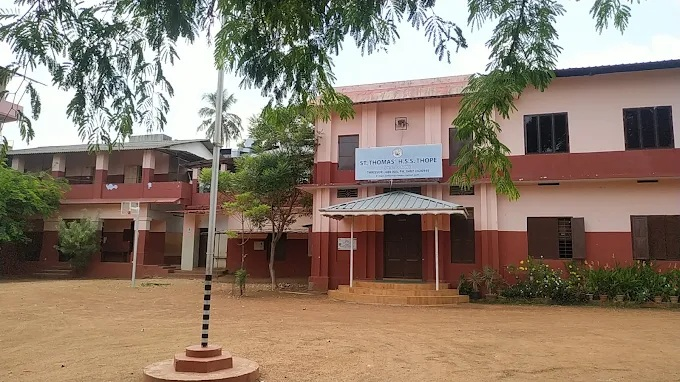
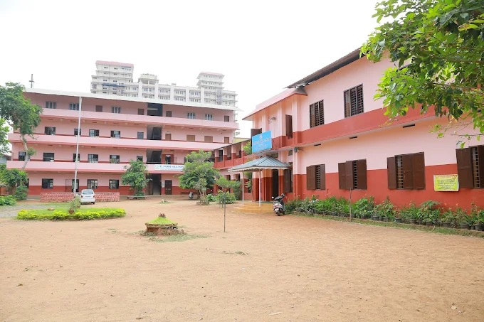
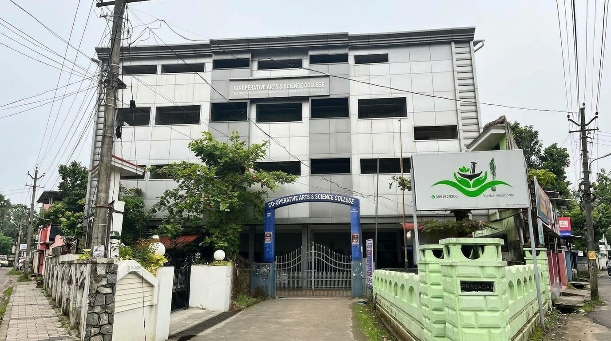
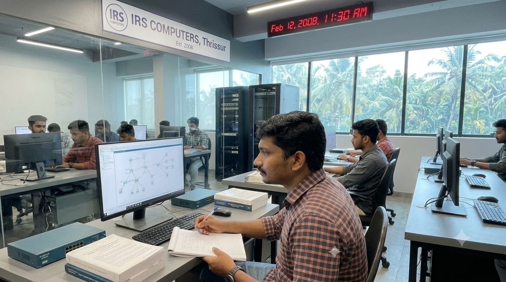
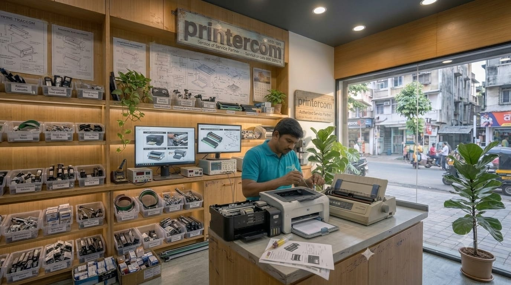
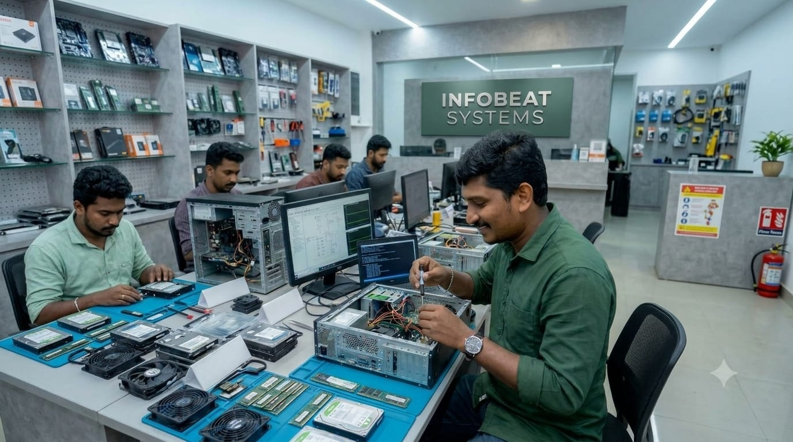
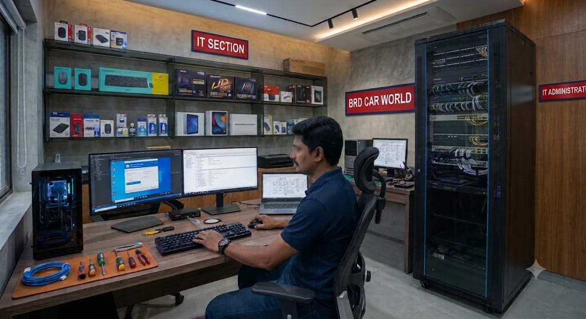

My professional journey in Information Technology, built through experience, continuous learning, and a passion for solving technical challenges.
From my early steps in education to my professional journey,
each stage has shaped me into who I am today[span_0](start_span)[span_0](end_span).

Completed my 10th grade with a strong foundation for my future[span_1](start_span)[span_1](end_span).

Completed Plus Two with a focus on my career goals.

Completed my degree in Economics, which broadened my knowledge and perspective.

Gained practical knowledge and skills in IT, which helped me build a strong technical foundation[span_2](start_span)[span_2](end_span).

Worked at a printer service center, handling printer troubleshooting, repairs, maintenance, and customer support.

Handled IT support, troubleshooting, and hardware/software maintenance[span_3](start_span)[span_3](end_span).

Currently working as a System Administrator, managing systems, networks and ensuring smooth IT operations.
Windows installation, user support and system maintenance.
LAN, Wi-Fi, TCP/IP, router and switch configuration.
Desktop, laptop, printer and peripheral troubleshooting.
Windows, Microsoft Office, drivers and software installation.
Managing IT infrastructure, desktops, laptops, printers, networking and providing technical support.
Hardware troubleshooting, software installation, networking and customer support.
Built a strong foundation in computer hardware, operating systems, networking and technical support.
System Administrator with 18+ years of experience in IT support, system administration, networking and hardware troubleshooting. Passionate about solving technical problems and maintaining reliable IT infrastructure.
Years of Experience
Started IT Career
Joined BRD Car World
Commitment to Learning
Download my latest resume to learn more about my experience, technical skills, and professional journey.
📄 Download Resume